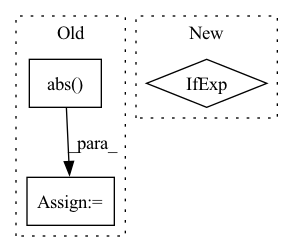

Pattern ID :34449
Before Change
axis_not_channel = [i for i in range(len(tensor_data.shape))]
axis_not_channel.remove(channel_axis)
if per_channel:
thresholds_per_channel = np.max(np.abs( tensor_data) , axis=tuple(axis_not_channel), keepdims=True)
else:
thresholds_per_channel = np.max(np.abs(tensor_data), keepdims=True)
thresholds_per_channel = np.power(2.0, np.ceil(np.log2(thresholds_per_channel)))After Change
n_clusters = 2 ** n_bits
kmeans = KMeans(n_clusters=n_clusters)
threshold_selection_tensor = symmetric_selection_tensor if is_symmetric else power_of_two_selection_tensor
thresholds_per_channel = threshold_selection_tensor(tensor_data, p, n_bits, per_channel,
channel_axis, n_iter, min_threshold,
qc.QuantizationErrorMethod.NOCLIPPING)[THRESHOLD]In pattern: SUPERPATTERN
Frequency: 3
Non-data size: 3
Instances Fragment ID: 98803943
Project Name: sony/model_optimization
Commit Name: 6684273eb930b681f8316af3d81d8e8903e48f67
Time: 2022-12-15
Author: 78862769+elad-c@users.noreply.github.com
File Name: model_compression_toolkit/core/common/quantization/quantization_params_generation/lut_kmeans_params.py
M Class Name: AnonimousClass
N Class Name: AnonimousClass
M Method Name: lut_kmeans_tensor(9)
N Method Name: lut_kmeans_tensor(8)
M Parent Class:
N Parent Class:
M File Name: model_compression_toolkit/core/common/quantization/quantization_params_generation/lut_kmeans_params.py
N File Name: model_compression_toolkit/core/common/quantization/quantization_params_generation/lut_kmeans_params.py
M Start Line: 63
M End Line: 69
N Start Line: 40
N End Line: 74
Before Change
delta = -x_min / zero_point
elif self.scale_method == "mse":
// we always use symmetric quantization in mse mode
x_absmax = x.abs() .max()
best_score = 1000
for i in range(80):
new_max = x_absmax * (1.0 - (i * 0.01))After Change
if score < best_score:
best_score = score
delta = (2 * new_max) / (2 ** self.n_bits - 1)
zero_point = round(new_max / delta) if x_min < 0 else 0
else:
raise NotImplementedError
Fragment ID: 98803942
Project Name: yhhhli/brecq
Commit Name: 2cbdc7e8dbd0407856bb4f35ec0a23d2995ef72d
Time: 2021-02-17
Author: loafyuhang@gmail.com
File Name: quant/quant_layer.py
M Class Name: UniformAffineQuantizer
N Class Name: UniformAffineQuantizer
M Method Name: init_quantization_scale(3)
N Method Name: init_quantization_scale(3)
M Parent Class: nn.Module
N Parent Class: nn.Module
M File Name: quant/quant_layer.py
N File Name: quant/quant_layer.py
M Start Line: 91
M End Line: 118
N Start Line: 97
N End Line: 128
Before Change
// random distance matrix, in case rdkit errors out
// print("distance embedding failed")
distances_3d = np.random.rand(mol.GetNumAtoms(), mol.GetNumAtoms())
distances_3d = np.abs( distances_3d - distances_3d.transpose())
// Get topological (i.e. path-length) distance matrix and number of atoms
distances_path = Chem.GetDistanceMatrix(mol)
n_atoms = mol.GetNumAtoms()After Change
// Get atom features
for atom in mol.GetAtoms():
atom_position = list(conformer.GetAtomPosition(atom.GetIdx())) if args.three_d else None
mol_fatoms.append(atom_features(atom, atom_position))
// Get bond features Fragment ID: 98803941
Project Name: aamini/chemprop
Commit Name: 0000eedf0800c0ae4e7874b2c000fb5f2915eea0
Time: 2018-09-28
Author: yangk@mit.edu
File Name: mpn.py
M Class Name: AnonimousClass
N Class Name: AnonimousClass
M Method Name: mol2graph(2)
N Method Name: mol2graph(2)
M Parent Class:
N Parent Class:
M File Name: mpn.py
N File Name: mpn.py
M Start Line: 154
M End Line: 155
N Start Line: 148
N End Line: 168